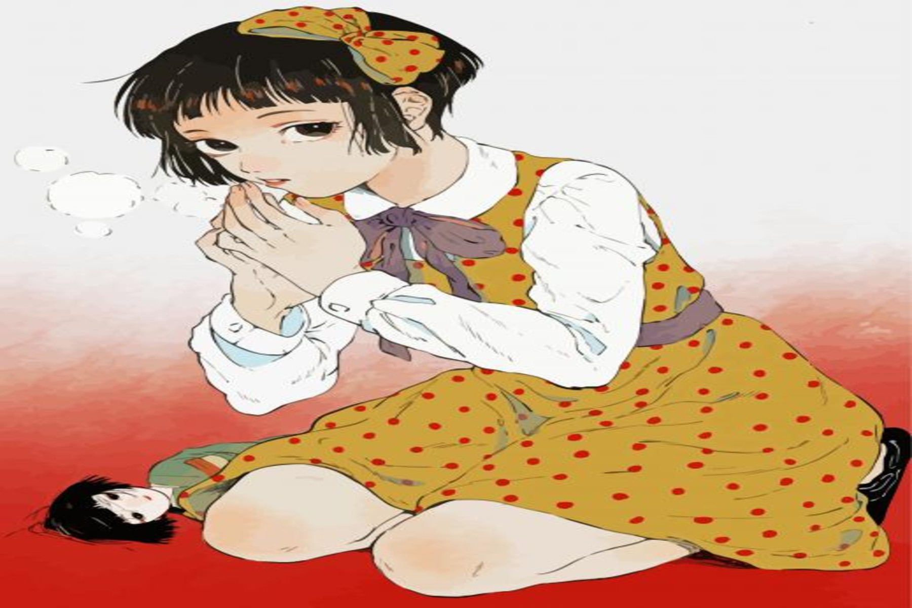
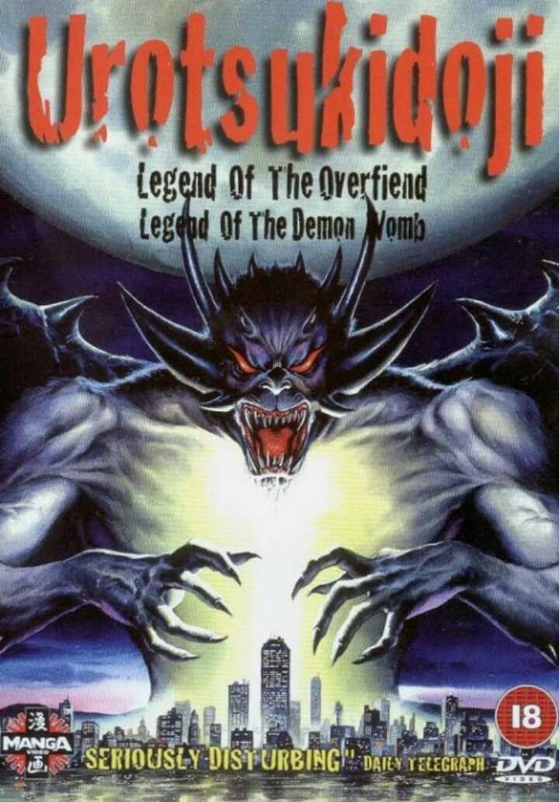
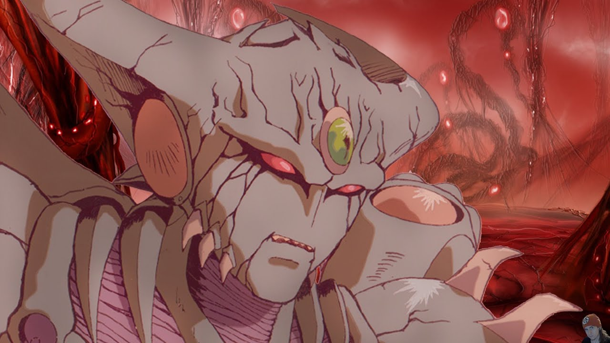
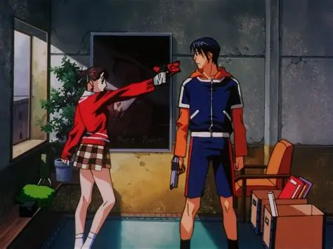
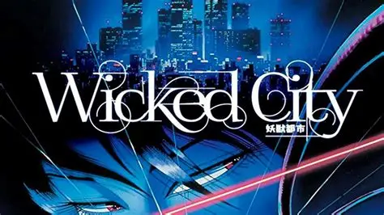
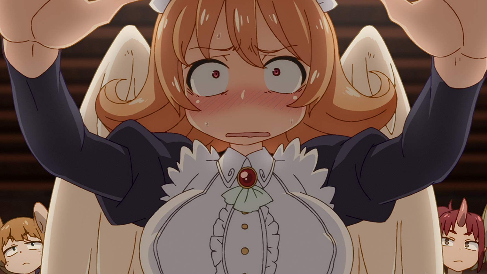
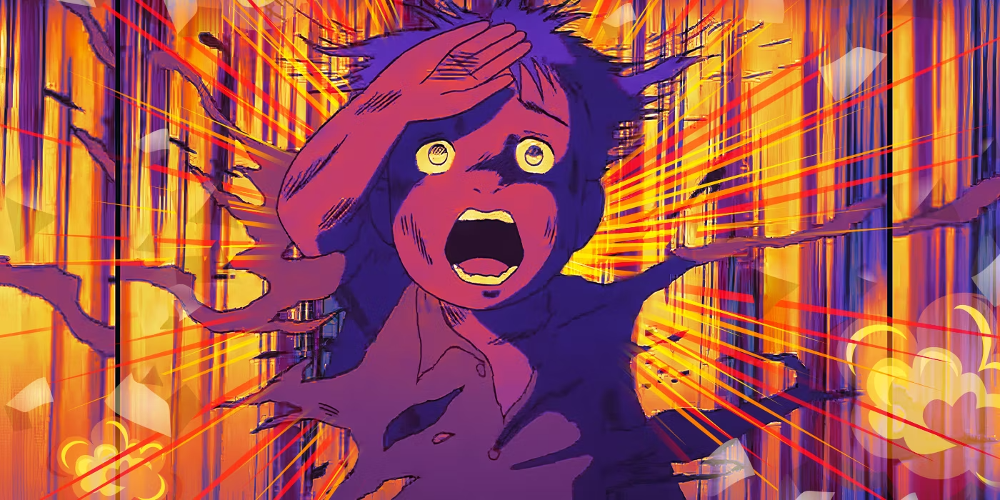
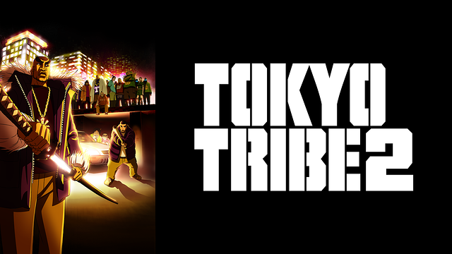

SMASH Senpai
Top 10 Anime That Were Banned Worldwide (Some Are Still Illegal)
Not all anime are banned because they’re disturbing. Some are banned because they challenge laws, culture, politics, or cross boundaries that certain countries refuse to accept.
While many anime push creative limits, only a handful have gone so far that broadcasters, governments, or entire regions decided they should never air at all.
This list isn’t about shock value alone. It focuses on anime that were officially banned, censored, or removed due to extreme content, moral panic, political themes, or public backlash.
Some of these titles were banned outright. Others were heavily edited, restricted, or quietly pulled from broadcast after release.
These are the Top 10 Anime That Were Banned Worldwide — and the reasons they were deemed too dangerous to show.
Sponsored
#1 Midori: Shoujo Tsubaki
Midori: Shoujo Tsubaki is not just a banned anime — it is one of the most infamous pieces of animation ever created in Japan. Adapted from a controversial underground manga, this film became notorious for content so extreme that it was banned, confiscated, or never officially released in many countries.
The story follows a young orphan girl forced into a traveling freak show, where cruelty, exploitation, and psychological abuse are treated as normal. Unlike most disturbing anime, Midori does not rely on fantasy or metaphor. Everything is presented in a raw, uncomfortable way that makes the viewer feel trapped alongside the protagonist.
What pushed Midori into worldwide bans wasn’t just its subject matter, but how unapologetically it portrayed it. There is no moral hand-holding, no safe distance, and no attempt to soften what’s happening on screen. Many screenings were shut down mid-showing, and for years, the film circulated only through underground tapes and private collections.
Midori is often cited as an example of how far anime can go before it stops being entertainment and becomes a test of endurance. It remains banned or heavily restricted in multiple regions, and even today it’s considered unsuitable for public distribution.
- Episode count: Movie
- Genre: Horror, Psychological, Avant-Garde
- Banned for: Extreme content and exploitation themes
- Core reason: Considered unfit for public release

play anime smash or pass here (not sponsored)
SMASH SENPAI – Smash or Pass#2 Urotsukidōji: Legend of the Overfiend
Urotsukidōji: Legend of the Overfiend is one of the most historically controversial anime ever produced. Released during the rise of adult OVAs in the late 1980s, it quickly gained international attention for crossing boundaries that most animation had never approached.
The anime blends dark fantasy, supernatural horror, and extreme violence into a chaotic narrative about demons, humans, and the collapse of worlds. Its graphic imagery shocked audiences worldwide, leading to bans, seizures, and edited releases in multiple countries. In some regions, it was cited directly in debates about anime censorship laws.
What made Urotsukidōji particularly dangerous in the eyes of regulators was its accessibility. At the time, animation was still largely seen as children’s entertainment, and this title shattered that perception almost overnight. Authorities responded with outright bans rather than ratings or warnings.
Despite — or because of — the backlash, Urotsukidōji became a cult legend. It influenced how anime was regulated overseas and permanently changed how adult animation was viewed. Even today, uncensored versions remain restricted or unavailable through official platforms in many countries.
- Episode count: OVA series
- Genre: Horror, Dark Fantasy, Supernatural
- Banned for: Graphic content and explicit violence
- Core reason: Sparked international censorship debates
Sponsored
#3 Violence Jack

Violence Jack is a brutal post-apocalyptic anime that pushed violence far beyond what most audiences — or regulators — were prepared for. Created by Go Nagai, the same mind behind Devilman, this series became infamous for its relentless brutality and hopeless tone.
Set in a ruined world where law and morality have collapsed, Violence Jack depicts survival through constant cruelty. The anime does not shy away from graphic imagery, showing violence as chaotic, sudden, and often meaningless. This raw presentation led to heavy censorship and outright bans in several regions outside Japan.
Unlike action-driven violent anime, Violence Jack feels oppressive by design. There is no sense of safety, justice, or balance. Characters suffer sudden deaths, and cruelty often goes unpunished, making the series deeply uncomfortable to watch.
Because of its content, Violence Jack was rarely broadcast in full. Edited versions removed large sections, while uncut releases were restricted to niche collectors. Even today, it remains one of the most difficult anime to distribute officially due to its extreme nature.
- Episode count: OVA series
- Genre: Action, Horror, Post-Apocalyptic
- Banned for: Extreme violence and bleak themes
- Core reason: Considered excessively graphic
#4 Genocyber
Genocyber is often described as one of the most violently excessive anime ever produced, even by the standards of adult OVAs. Released in the early 1990s, it quickly earned a reputation so extreme that several countries either banned it outright or refused to license it.
The anime centers around psychic experimentation, military corruption, and the complete dehumanization of its characters. Violence in Genocyber is not stylized or heroic — it is chaotic, sudden, and brutally graphic. Entire scenes exist purely to shock the viewer, often pushing far past what was acceptable at the time.
What made Genocyber particularly controversial was its lack of restraint. Limbs are torn apart, civilians are slaughtered, and destruction is shown with disturbing detail. Many releases outside Japan were heavily edited, and some versions removed entire episodes to avoid legal trouble.
Despite the censorship, Genocyber became a cult title among collectors who sought out uncut versions. Its reputation as a “too far” anime remains intact decades later, making it one of the clearest examples of why anime censorship became stricter in the 1990s.
- Episode count: 5 (OVA)
- Genre: Horror, Sci-Fi, Psychological
- Banned for: Extreme gore and violence
- Core reason: Considered excessively graphic
Sponsored
#5 A Kite
A Kite is a rare example of an anime that became controversial not because of fantasy or horror, but because of how realistically disturbing it felt. Directed by Yasuomi Umetsu, the film gained international attention for scenes that led to bans and heavy censorship across multiple countries.
The story follows a young girl trained as an assassin, navigating a world of exploitation, corruption, and violence. What unsettled viewers most was the grounded presentation — the anime avoids exaggerated spectacle and instead depicts brutality in an almost clinical manner.
Due to its content, A Kite was released in multiple versions. Some countries removed entire scenes, while others refused to distribute it at all. Even today, streaming platforms avoid hosting uncensored editions, making the original version difficult to access legally.
Despite the backlash, A Kite influenced modern anime filmmaking, particularly in its visual style and realistic action choreography. It remains a textbook example of how anime can cross legal and cultural boundaries — and why censorship boards reacted so strongly.
- Episode count: Movie
- Genre: Crime, Psychological, Action
- Banned for: Explicit violence and sensitive themes
- Core reason: Heavy international censorship
#6 Wicked City
Wicked City is a dark cyberpunk horror anime that blurred the line between supernatural thriller and adult animation. Released in the late 1980s, it quickly gained notoriety for content that many countries deemed unsuitable for public release.
Set in a shadowy version of Tokyo, the anime follows secret agents tasked with protecting the human world from creatures hiding in another dimension. While the premise sounds simple, the execution is anything but. The film features graphic violence, disturbing creature designs, and scenes that triggered censorship boards worldwide.
Wicked City suffered extensive cuts in international releases. Some versions removed entire sequences, while others were restricted to adult-only distribution. The anime’s blend of horror and explicit imagery made it a frequent target of bans during the VHS era.
Over time, Wicked City gained cult status for its atmosphere, animation quality, and unapologetic tone. Even today, uncut versions remain difficult to broadcast openly, securing its place as one of the most censored cyberpunk anime ever produced.
- Episode count: Movie
- Genre: Horror, Cyberpunk, Supernatural
- Banned for: Explicit content and violence
- Core reason: Heavy censorship across regions
Sponsored
#7 Devilman Crybaby

Devilman Crybaby is one of the most controversial modern anime releases, not because of poor taste, but because it refused to compromise. Directed by Masaaki Yuasa, the series reimagines a classic manga through raw violence, explicit sexuality, and brutal emotional collapse.
Upon release, Devilman Crybaby was restricted or outright blocked in several regions due to its graphic imagery and themes. Public broadcasters avoided it entirely, and some countries required heavy age restrictions or content warnings before allowing distribution.
What made the anime especially divisive was its intent. The violence is not heroic, the sexuality is not glamorous, and the suffering is not played for shock alone. Instead, the series presents humanity at its most desperate — fear, paranoia, and hatred spreading faster than reason.
Despite the bans and backlash, Devilman Crybaby became one of the most discussed anime of the decade. Its refusal to soften its message is exactly why it faced censorship — and why it remains unforgettable.
- Episode count: 10
- Genre: Horror, Psychological, Supernatural
- Banned for: Explicit violence and sexual content
- Core reason: Unfiltered portrayal of humanity’s collapse
#8 Interspecies Reviewers
Interspecies Reviewers might look like a fantasy comedy on the surface, but it quickly became one of the most widely removed anime in recent history. Shortly after airing began, broadcasters across multiple countries pulled the series entirely.
The premise — characters reviewing brothels of different fantasy species — pushed sexual content far beyond what most TV networks were willing to allow. Even stations that initially approved the series reversed their decision after only a few episodes.
What made the controversy unique was how sudden it was. Unlike older banned anime, Interspecies Reviewers was removed mid-broadcast, leaving unfinished airings and confused viewers. Streaming platforms also quietly dropped the show to avoid regulatory backlash.
While some defended it as satire, censorship boards saw it as explicit adult content masquerading as mainstream anime. Its removal became a clear reminder that modern anime still faces hard limits — especially when it comes to sexual themes.
- Episode count: 12
- Genre: Fantasy, Comedy, Adult
- Banned for: Explicit sexual content
- Core reason: Removed from broadcasters mid-airing
#9 Barefoot Gen
Barefoot Gen is one of the most emotionally devastating anime films ever made, and its bans had nothing to do with fantasy or shock value. Instead, it was restricted and removed in various regions because of how realistically it portrayed nuclear warfare.
The film depicts the atomic bombing of Hiroshima through the eyes of a child. Unlike sanitized war stories, Barefoot Gen shows the physical and psychological aftermath in painful detail — burned bodies, starvation, and long-term trauma.
Several schools and public institutions removed the film from educational circulation, claiming the imagery was too disturbing for younger audiences. Some countries limited screenings entirely, citing concerns about graphic realism.
Despite the bans, Barefoot Gen is widely regarded as one of the most important anti-war anime ever created. Its censorship highlights how uncomfortable truthful depictions of history can be — especially when they refuse to soften reality.
- Episode count: Movie
- Genre: War, Drama, Historical
- Banned for: Graphic depiction of nuclear trauma
- Core reason: Considered too disturbing for public broadcast
#10 Tokyo Tribe 2
Tokyo Tribe 2 is a violent, chaotic depiction of a fractured Tokyo ruled by street gangs. From the moment it aired, it faced censorship in multiple regions due to its relentless brutality and explicit content.
The anime features graphic violence, sexual assault themes, and an unfiltered portrayal of criminal culture. Unlike stylized action anime, Tokyo Tribe 2 embraces ugliness — fights are brutal, power is abused, and morality is almost nonexistent.
Because of its content, several broadcasters refused to air it uncensored. International releases often edited or removed scenes, while others restricted it to late-night adult slots.
Over time, Tokyo Tribe 2 became a cult title precisely because of its lack of restraint. It remains a clear example of how anime can cross cultural boundaries — and why censorship boards continue to intervene.
- Episode count: 13
- Genre: Action, Crime, Psychological
- Banned for: Extreme violence and explicit themes
- Core reason: Heavy censorship and restricted airing
Play Smash or Pass on SMASH Senpai.
 PLAY SMASH OR PASS
PLAY SMASH OR PASS